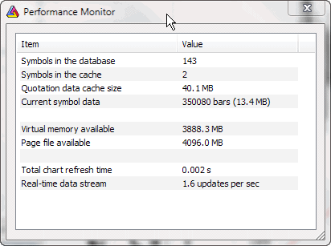

The performance monitor is available from the Tools->Performance Monitor menu and shows some memory and usage statistics:
The contents of the window are updated automatically every 3 seconds.
This tool is intended for two purposes:
a) tweaking cache settings for best RAM usage (For example, optimizations will
run faster if all quotation data can be kept in RAM.)
b) monitoring real-time performance
More uses will probably come in the future.